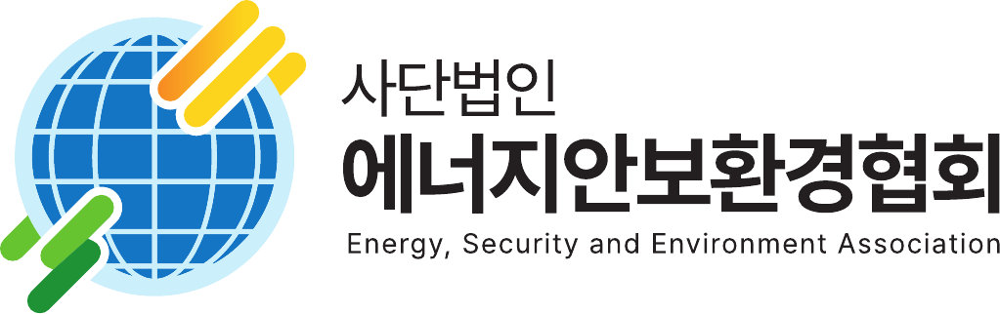

에안이 · 에너지 안보환경 수호자
에너지안보환경
지킴이 전용 앱
교육을 이수한 지킴이만 사용하는
점검 · 신고 · 보수 관리 앱입니다
AI 보조판정은 참고용이며 최종 판정 주체는 지킴이입니다. 성과보수·현상금은 관계기관 처분 확정 후 지급됩니다.
인증
안녕하세요
0P
보유 포인트
0원
현금 전환 예정 (성과보수·현상금)
수임 중인 케이스
수임 가능한 케이스
최근 내 활동
안전 수칙고압전선 5m 이내 진입 금지 · 시설 내부 출입 금지 · 점검은 외부 관찰과 사진 촬영만 수행합니다.
보수 안내점검 보수는 ①건당 ②일당 ③성과 ④현상금 ⑤월 고정비 5층으로 지급됩니다. 지갑에서 내역을 확인하세요.
점검 체크리스트
특이사항 메모
모든 항목을 판정해야 제출할 수 있습니다
신고서 자동 생성점검 결과로 관계기관 신고서 초안을 만들었습니다. 증거 3종(GPS·시각·사진 해시)이 함께 첨부됩니다.
신고 채널 선택
이중보상 공제 안내법정 포상금과 협회 성과보수가 중복되면 공익신고자보호법 기준으로 금액이 공제될 수 있습니다.
근접 자동 알림점검 대상 50m 이내에 접근하면 그 시설의 체크리스트 안내가 자동으로 뜹니다 (GPS 지오펜싱).
대기 주의 수임중 완료
근처 시설
가까운 순
시설을 촬영하세요촬영과 동시에 GPS·시각·사진 해시가 증거로 기록됩니다
보유 포인트
0 P
현금 전환 예정 0원
보수 내역 · 5층 체계
L1 건당L2 일당L3 성과L4 현상금L5 고정비
지급 규칙성과보수·현상금은 관계기관 처분이 확정된 후 지급됩니다. 법정 포상금은 정부·기관이 직접 지급하며, 협회 성과보수와 중복되면 공제 규정이 적용됩니다.
인증
등급 진행
신뢰점수
92허위 제보 1건 시 대폭 감점
배지
보호 · 약관
1공익신고자 신원 보장 (공익신고자 보호법)
2위치·사진 수집 고지 및 동의 (개인정보 보호법)
3이중보상 공제 규정 및 활동 면책 조항
내 데이터
협회 운영 콘솔
0
이번 달 케이스
0
처분 확정
1.42억
회수·환수액 (누적)
94%
검증 SLA 48h 준수